Lecture 4
MapReduce, Hadoop, and Hadoop Streaming
Georgetown University
Spring 2024
Looking back
Linux and version control
Python and parallelization
Intro to the Cloud
Setup of AWS Services
Today
Intro to Hadoop and MapReduce
Hadoop Streaming
Lab/Demo (depending on time):
- Start a cluster on AWS
- Run a sample Hadoop job
- Run a simluated mapreduce job using the command line
- Run a Hadoop Streaming job
Yesterday’s hardware for big data processing
The 1990’s solution
One big box, all processors share memory
This was:
- Very expensive
- Low volume
It was all premium hardware. And yet is still was not big enough!
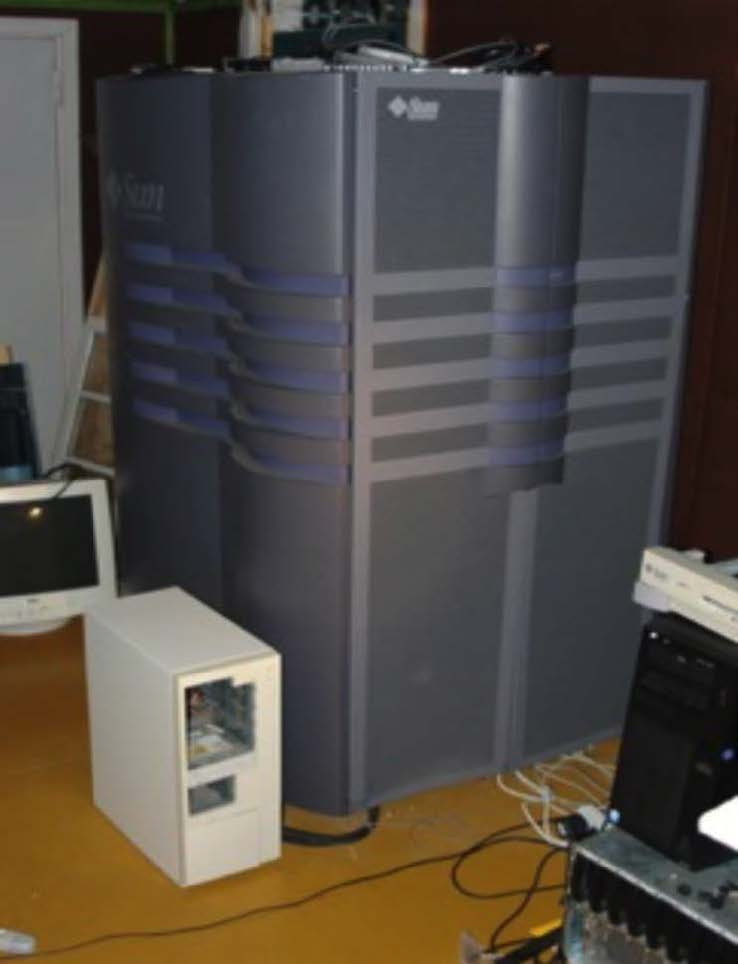
Enter commodity hardware!
Consumer-grade hardware
Not expensive, premium nor fancy in any way
Desktop-like servers are cheap, so buy a lot!
- Easy to add capacity
- Cheaper per CPU/disk
But
Need more complex software to be able to run on lots of smaller/cheaper machines.
Problems with cheap hardware
Failures
- 1-5% hard drives/year
- 0.2% DIMMs/year
Network speed vs. shared memory
- Much more latency
- Network slower than storage
Uneven performance
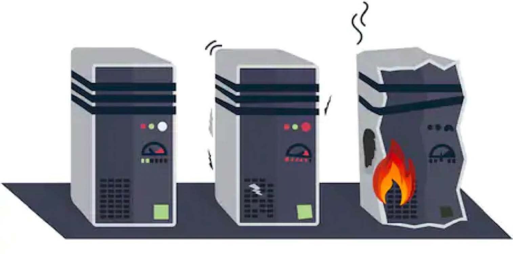
Big data processing systems build on average machines which fail pretty often!
Hang on to this thought!
Meet Doug Cutting
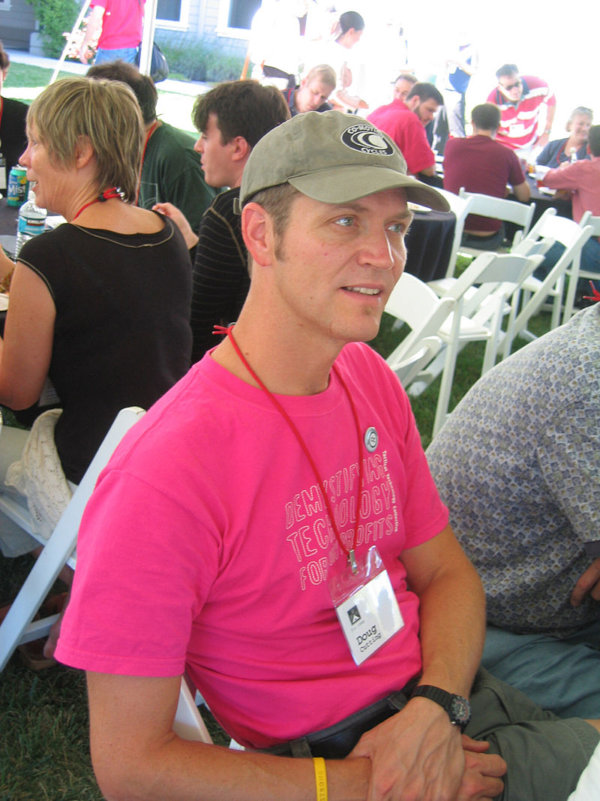
- In 1997, Doug Cutting started writing the first version of Lucene (a full text search library).
- In 2001, Lucene moves to the Apache Software Foundation, and Mike Cafarella joins Doug and create a Lucene subproject called Nutch, a web-crawler. Nutch uses Lucene to index the contents of a web page as it crawls it.
- Nutch and Lucene were deployed on a single machine (single core processor, 1GB RAM, 8 HDDs ~ 1TB), achieved decent performance, but they needed something that would be scalable enough to be able to index the web.
Doug and Mike set out to to improve Nutch
They needed a to build some kind of distributed storage layer to be the foundation of a scalable system. The came up with these requirements:
- Schemaless
- Durable
- Capable of handling component failure
- Automatically rebalanced
Does this sound familiar?
In 2003 and 2004 Google publishes two seminal papers
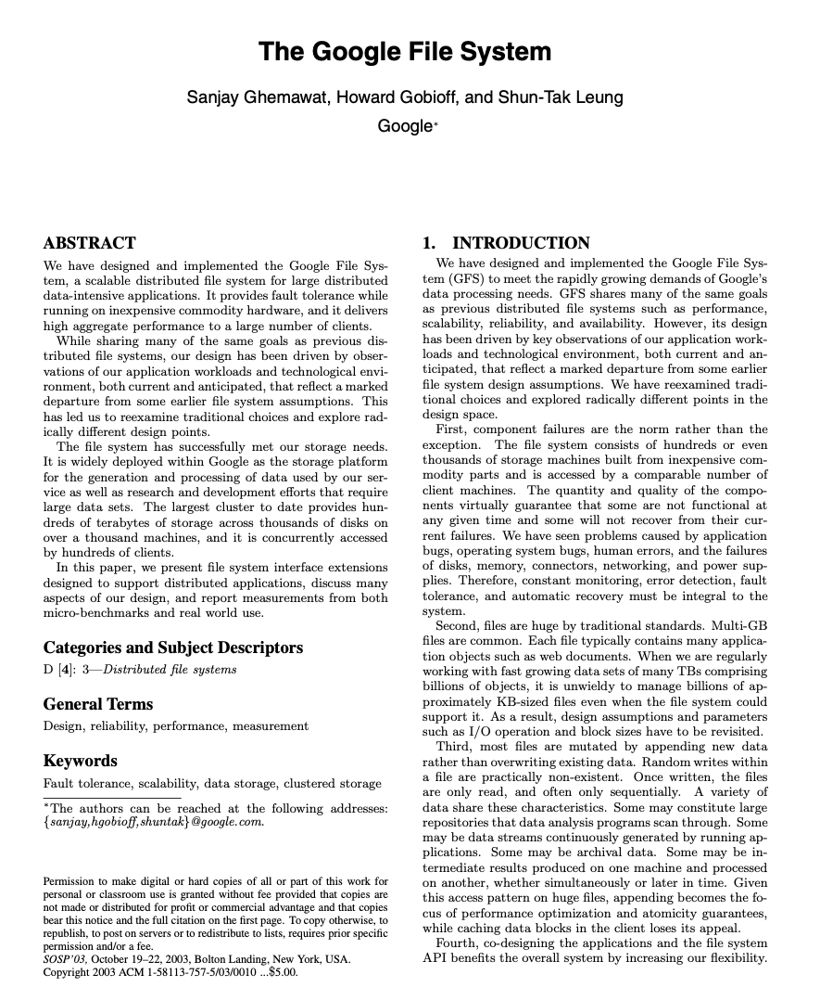
The Google File System (GFS) Paper
It describes how Google stored its information, at scale, using a reliable and high-available storage system can be built on commodity machines considering that failures are the norm rather than the exception.
GFS is: * optimized for special application environment * fault tolerance is built in * centralized metadata management * simplify the operation semantics * decouple I/O and metadata operations
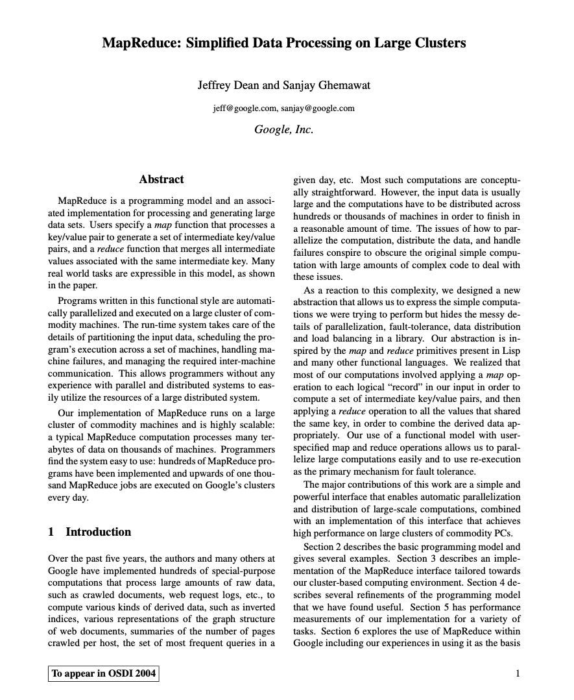
The Google MapReduce Paper
Describes how Google processes data, at scale using MapReduce, a paradigm based on functional programming. MapReduce is an approach and infrastructure for doing things at scale. MapReduce is two things:
- A data processing model named MapReduce
- A distributed, large scale data processing paradigm.
Which provides the following benefits:
- Moves the computation to the data
- Automatic parallelization and distribution
- Fault tolerance
- I/O scheduling
- Integrated status and monitoring
The MapReduce model
- Map function takes an input pair and produces a set of intermediate key/value pairs. The MapReduce library groups together all intermediate values associated with the same intermediate key and passes them to the Reduce function.
- Reduce function accepts an intermediate key and a set of values for that key. It merges together these values to form a possibly smaller set of values. Typically just zero or one output value is produced per Reduce invocation.
The advantages
- The model is relatively easy to use, even for programmers without experience with parallel and distributed systems since it handles parallelization, fault-tolerance, locality optimization, and load balancing.
- A large variety of problems are easily expressible as MapReduce computations.
- This paper developed an implementation of MapReduce that scales to large clusters of machines comprising thousands of machines.
The genesis of Hadoop: an implementation of Google’s ideas
- Using the Google papers as a specification, they started implementing the ideas in Java in 2004 and created the Nutch Distributed File System (NDFS).
- The main purpose of this file system was to abstract the cluster’s storage so that it presents itself as a single, reliable, file system.
- Another first class featuer of the system was its ability to handle failures without operator interventions and it can run on inexpensive, commodity hardware components
- In 2006, Hadoop was created by moving NDFS (which becamie HDFS) and the MapReduce implementation out of Lucene. Hadoop 1.0 was released. 1.8TB of data sorts in 188 nodes in 48hours. Doug Cutting goes to work at Yahoo!
- In 2007, LinkedIn, Twitter and Facebook started adopting this new tool and contributing back to the project. Yahoo! is running their first production Hadoop cluster with 1,000 machines.
- In 2008, Yahoo! is running a 10,000 core cluster. World record created for fastest sorting of 1Tb in 209 seconds using a 910 node cluster. Cloudera is formed.
- In 2009, Yahoo!’s cluster is 24,000 cores and claims to sort 1TB in 62 seconds. Amazon introduces Elastic MapReduce. HDFS and MapReduce become their own separate sub-projects.
- In 2010, Yahoo!’s cluster is 4,000 and ~70PB, Facebook’s is 2,300 nodes and ~40PB.
- In 2011, Yahoo!’s cluster is 42,000 nodes
- In 2017, Twitter Hadoop cluster has over 500 Petabytes of data. Biggest cluster over 10k nodes. Read more here
Trivia question: why is it named Hadoop?
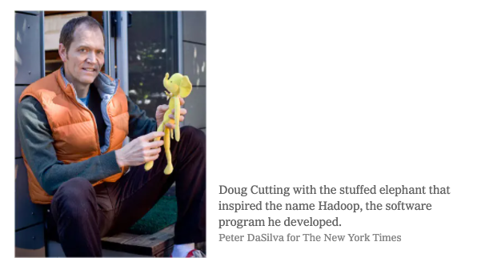
Tangent: Why Open Source Matters!
The Google File System is not popular as a program among the business world… why???
Hadoop has become the standard for cluster storage because it is open source!!
Who has heard of Colossus? (Google’s next version of GFS)
What is Hadoop 1.0: MapReduce Engine and HDFS
MapReduce performs the computations and manages cluster
- The Job Tracker is the master planner
- The Task Tracker runs each task
HDFS stores the data
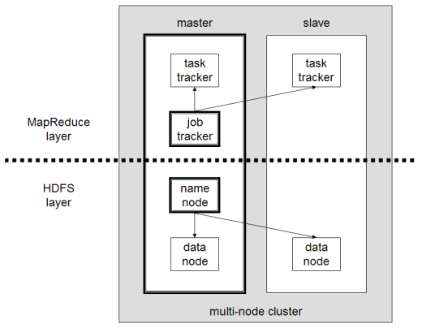
Hadoop 1.0 Problems
- Monolithic
- MapReduce had too many responsibilites
- Assigning cluster resources
- Managing job execution
- Doing data processing
- Interfacing with client applications
- Only supported MapReduce
- Had a single NameNode to manage the cluster (single point of failure)
- Batch oriented and extremely inefficient with iterative queries
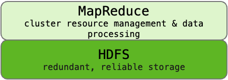
YARN & Hadoop 2.0
- Cluster management capability gets pulled out of MapReduce and becomes YARN (Yet Anothe Resource Negotiator), decoupling cluster operations from data pipeline
- Allowed for other applications to run on a cluster
- Hadoop 2.0 was released in 2013
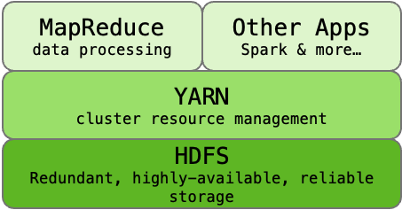
A MapReduce Job (1.0)

A MapReduce Job (2.0+)
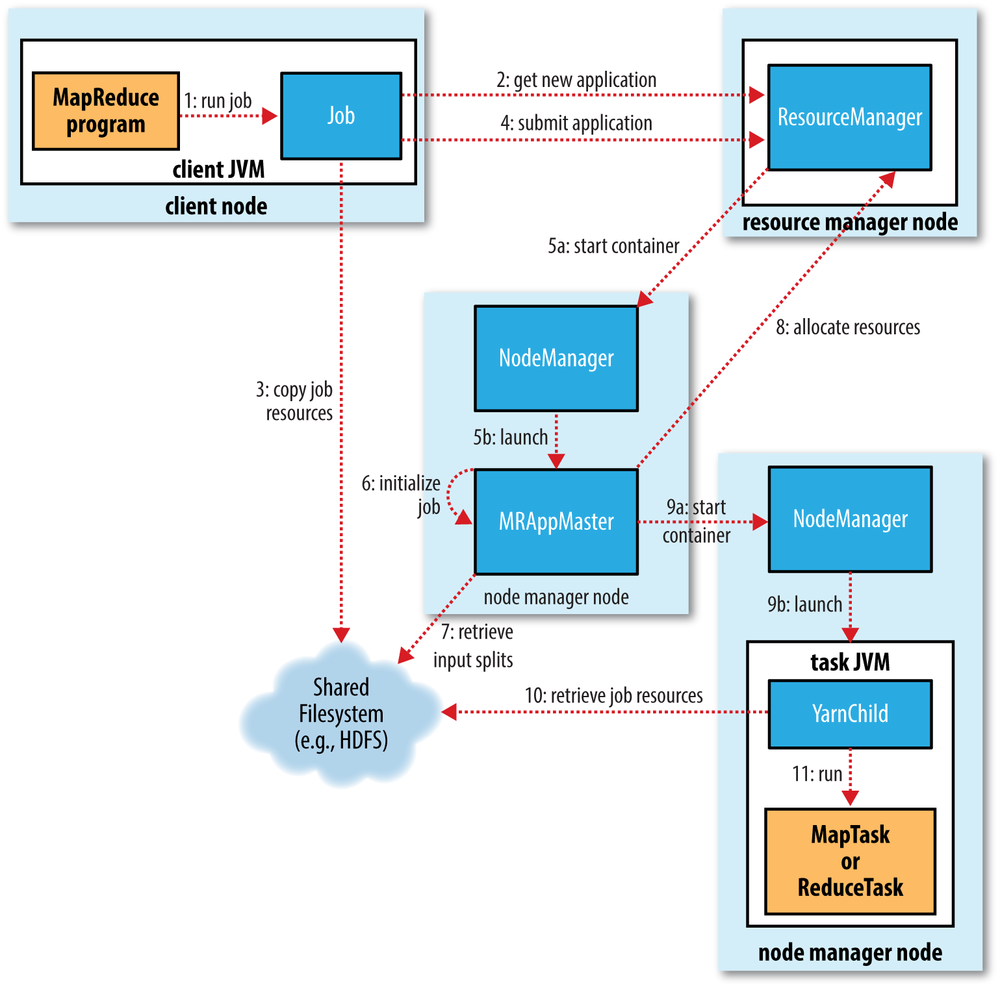
How YARN manages the Cluster

The Hadoop Architecture is Scalable
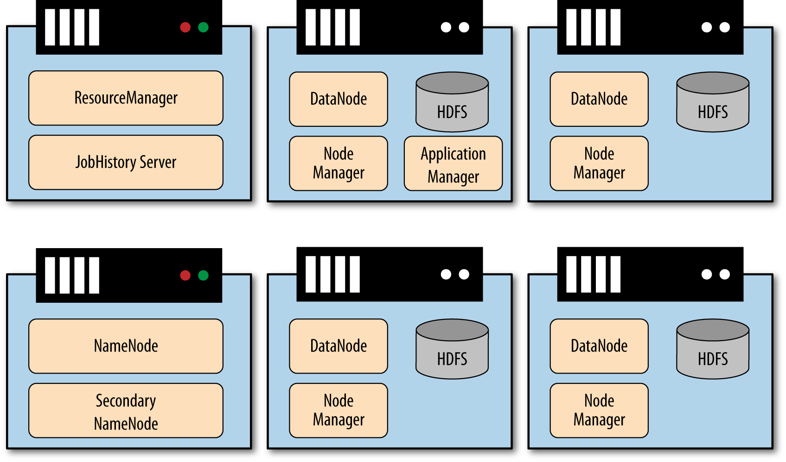
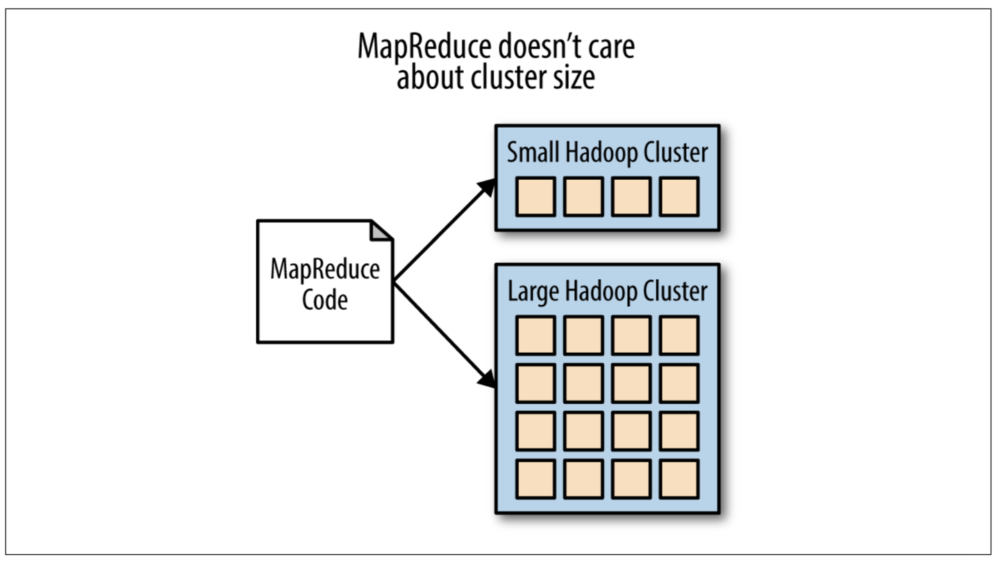
Hadoop 3.0 (Released 2017)
- Supports multiple standby NameNodes.
- Supports multiple NameNodes for multiple namespaces.
- Storage overhead reduced from 200% to 50%
- Supports GPUs
- Supports for Microsoft Azure Data Lake and Aliyun Object Storage System file-system connectors
- Rewrite of Hadoop Shell
- MapReduce task Level Native Optimization.
- Introduces more powerful YARN
The Current Hadoop Ecosystem: https://hadoopecosystemtable.github.io/
Let’s revisit Map and Reduce and learn more about MapReduce
Map
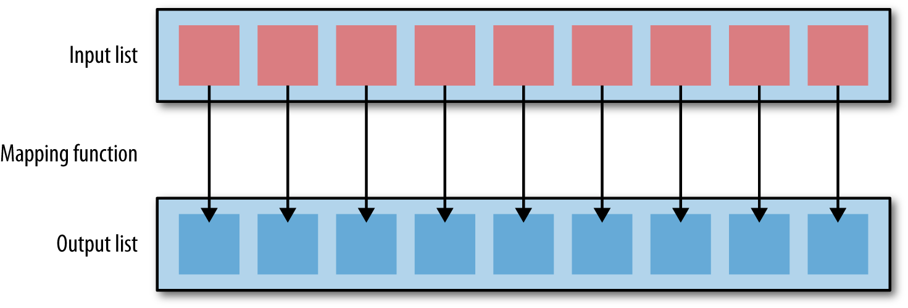
Map tasks are broken into the following phases:
- record reader: translates the input split generated by the input format into records or key/value pairs
- map: function that executes on every input record
- combiner: acts as a localized reducer to pre-aggregate within the map phase
- partitioner: takes intermediate key/value pairs from the mapper (or combiner if used) and splits them up into shards, one shard per reducer
Reduce

Reduce tasks are broken into the following phases:
- shuffle and sort: this phase takes the output files written by all of the partitioners and downloads the files to the local node where the reducer code will run
- reducer: function that executes on every group of records for the same key
- output format: translates the final key/value pair and writes out to a file by a record writer
Combining Everything into MapReduce
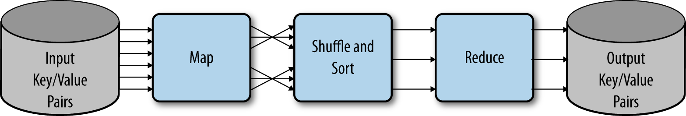
Some typical MapReduce patterns
Map Only

Examples of map-only jobs:
- Filtering
- Data reorganization
- Running a task in an embarrassingly parallel way
Map and Reduce
Single reducer
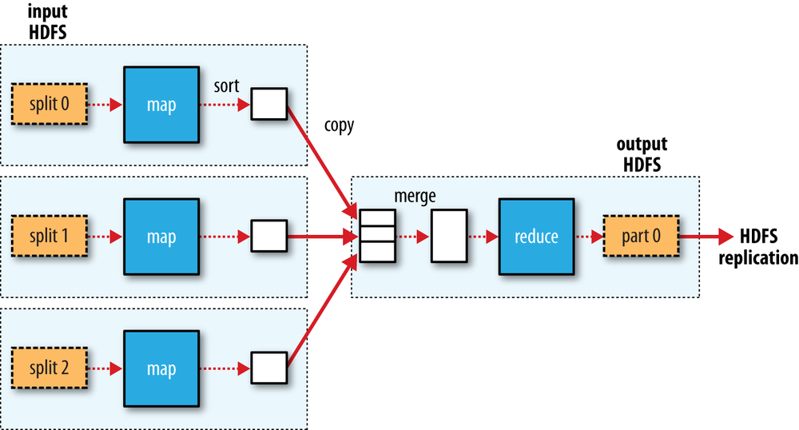
Multiple reducers

Benefits of Hadoop/MapReduce
Fault tolerance
Map and Reduce functions are simple to understand and easy to program
Limitations of Hadoop/MapReduce
Everything has to be expressed in a map or reduce, and sometimes you can’t
There is no control over the order in which map or reduce run
Data is not indexed
High overhead
You cannot leverage parallelism if you have an extremely large number of very small files (smaller than a single block)
Only suited for batch-processing, not real-time
Working with your data in a cluster
Everything begins and ends in a distributed filesystem
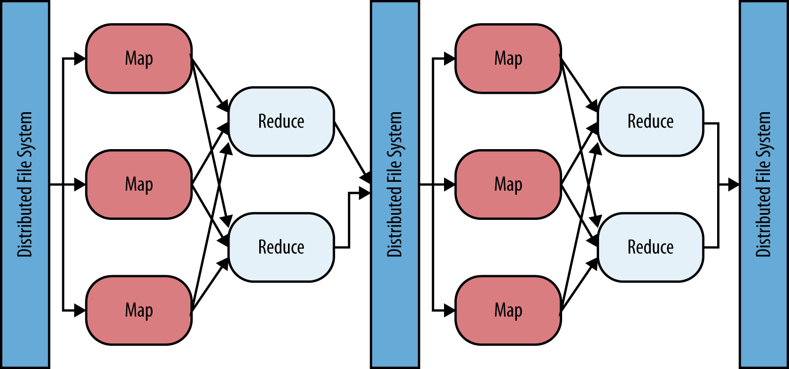
Distributed filesystems
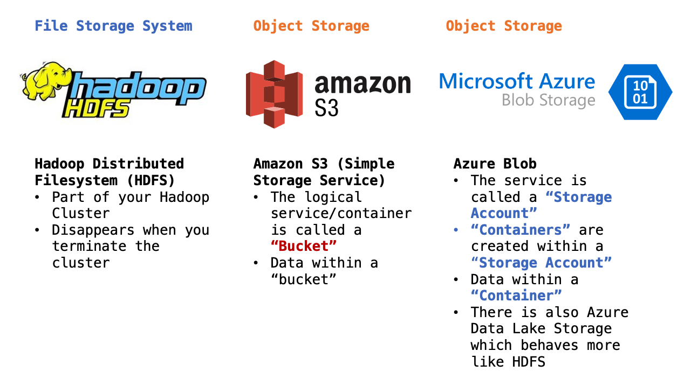
Cloud Object Storage vs HDFS
Independent scalability
Integration via simple REST API calls
Lower cost
No single point of failure
Cloud based Hadoop Clusters
Amazon Elastic MapReduce (EMR) and Azure HDInsight
On Premises
Cloud Based (note the storage layer)

Accessing Data in Distributed Object/File System
For files in the Cluster HDFS
directory/data/which is a shortcut to/user/hadoop/directory/data/
For files in Amazon S3
The service name is S3 and the data container is called a “bucket (bucket_name)” * s3://bucket_name/directory/data/
For Files in Azure Blob
The service name is Azure Storage Account (your_account) and the data container is called a “container (container)”. There can be many containers in a storage account.
wasb://container@your_account.blob.core.windows.net/directory/data/
HDFS essential commands
What commands have we discussed about the Linux file system that we want for HDFS?
#| code-line-numbers: false
# list files
hdfs dfs -ls <hdfs path>
# make directories
hdfs dfs -mkdir <folder location>
# touch an empty file
hdfs dfs -touchz <hdfs path>
# "put" file to hdfs
hdfs dfs -put <other file path> <dest hdfs path>
# "get" file from hdfs
hdfs dfs -get <other file path> <dest hdfs path>HDFS essential commands
# other flag commands, after command and subcommand
hdfs dfs -cat <hdfs path> #print contents of file
hdfs dfs -mv <old hdfs path> <new hdfs path> # move file/folder
hdfs dfs -rm <hdfs path> #only one file
hdfs dfs -rmr <hdfs path> # recursive flag!
hdfs dfs -chmod 777 <hdfs path> # set permissions
hdfs dfs -setfacl -m default:user:sqoop:rwx <hdfs path> # access control listHow to programmatically interact with HDFS from python?
Use a python library (hdfs, snakebite, pydoop)
What I do…
subprocess to call the real functions!
import subprocess
# local path of the file
local_path = '/home/hadoop/test_dir/myfile.txt'
# can be a new file name or a just folder destination
hdfs_path = '/user/hadoop/data_folder/'
# construct string command to execute in linux
linux_command = f'hdfs dfs -put {local_path} {hdfs_path}'
# run in linux, grab result code and message
result_code, result_message = subprocess.getstatusoutput(linux_command)
# raise an error if command did not exit properly
if result_code != 0:
raise TypeError(f'exit code: {result_code}, {result_message}')Writing MapReduce applications
Hadoop is written in Java and provides a Java API that allows you to specify the following:
The input and output data locations in your distributed object/file system
The Map and Reduce functions which are providede in the form of Java classes
Many kinds of job parameters and configurations
Oh no! What if I want to use other programming languages?
Introducing Hadoop Streaming
The name Hadoop Streaming comes from the Unix Streams

Hadoop Streaming allows you to run any executable script on the Hadoop Framework
It uses an existing Java program to run non-java programs!
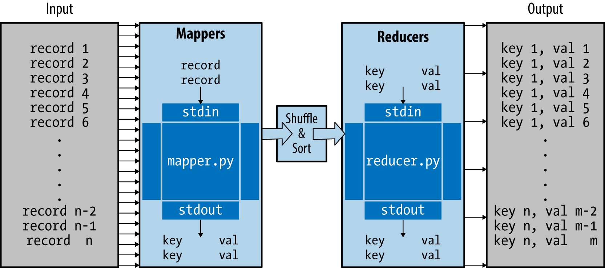Keys and values can be single or compound
Advantages of Hadoop Streaming
Using existing code-base (non Java)
Leveraging Hadoop framework to scale out
Limitations of Hadoop Streaming
No combiner or partitioner, just map -> shuffle-sort -> reduce
Everything is text. Your programs have to parse everything appropriately and convert strings to other data types as needed. You also have manually create the key/value pair for output.
If using R or Python, you must limit your programs to the base libraries.
Basic Python Mapper
#!/usr/bin/env python
import sys
if __name__ == "__main__":
for line in sys.stdin:
for word in line.split():
sys.stdout.write("{}\t1\n".format(word))- The first line makes this an executable Python script
- Read in line
- Split line by space into single words
- For every line: produce an output in the form of
word\t1where\tis a tab - Output is always a key and value pair!
Basic Python Reducer
#!/usr/bin/env python
import sys
def stdout(key, val):
sys.stdout.write(f"{key}\t{val}\n")
if __name__ == '__main__':
curkey = None
total = 0
for line in sys.stdin:
key, val = line.split("\t")
val = int(val)
if key == curkey:
total += val
else:
if curkey is not None:
stdout(curkey, total)
curkey = key
total = val
stdout(curkey, total)- The first line makes this an executable Python script
- Make stdout function
- Read in line and stores in memory
- Look at the key from the key/value
- Read next line and compare key
- Keep reading lines and storing lines in memory until the key is different
- When new key is received, take all the lines from the previous key and do something and write out result
- Repeat until all lines are processed
hadoop jar /usr/lib/hadoop/hadoop-streaming.jar \
-files basic-mapper.py,basic-reducer.py \
-input [[input-location]] \
-output [[output-location]] \
-mapper basic-mapper.py \
-reducer basic-reducer.pyhadoop jar /usr/lib/hadoop/hadoop-streaming.jarlaunches Hadoop with thehadoop-streaming.jar-files /home/hadoop/hadoop-streaming/basic-mapper.py,/home/hadoop/hadoop-streaming/basic-reducer.pytells the job to “ship” the executable mapper and reducer scripts (the actual filename and absolute path) to every node on the cluster. This line must always be second when you need to ship files with your job.-input [[input-location]]tells the Hadoop the location of your source data in a distributed object/filesystem. If you specify a directory, all files in the directory will be used as inputs-output [[output-location]]tells the Hadoop the location of your output data in a distributed object/filesystem. This parameter is just a name of a location, and it must not exist before running the job otherwise the job will fail.-mapper basic-mapper.pyandreducer basic-reducer.pyspecify the commands to run as a mapper and reducer, respectively. These must be shell scripts or native Linux commands. If you are using a script, you must “ship” it to the nodes with the-filesparameter above.
Gotcha’s
The output location of the job (HFDF, S3, Blob) must not exist before running a job. You will get an error if you try to write out to an existing/non-empty location
You have to ship or package your executables with the job.
Hadoop/Java error messages can be cryptic and only give you errors regarding the framework. If you need to debug your script you will need to look at the stdout/stderr logs
You need to specify the full path name of your mapper and reducer scripts
Example code
Hadoop References
Hadoop 3.3.1: https://hadoop.apache.org/docs/r3.3.1/
- HDFS Filesystem Commands: https://hadoop.apache.org/docs/r3.3.1/hadoop-project-dist/hadoop-common/FileSystemShell.html
Hadoop Streaming https://hadoop.apache.org/docs/r3.3.1/hadoop-streaming/HadoopStreaming.html